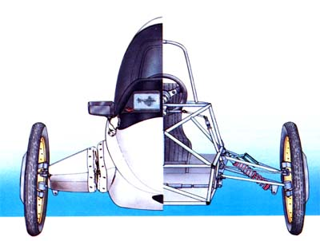
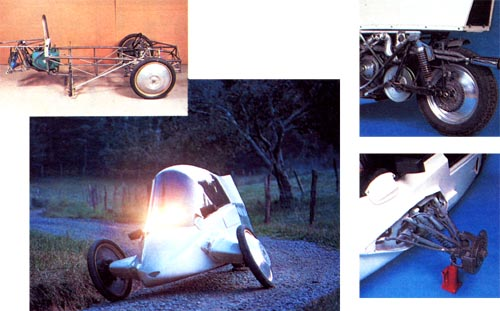
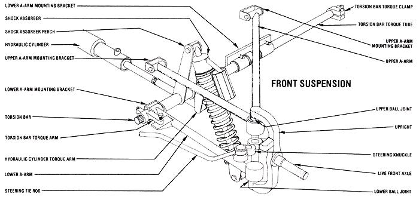

Leaning Toward The Future:The 3Vg (Part Ii)
A closer look at the vehicle that combines attributes of car and motorcycle; with information on suspension, computer controls, engine and drive.
Mother Earth News Editors
November/December 1983
Let's take a closer look at our Research Department's automotive effort.
In the first part of this article, published in our last issue (MOTHER NO. 83, page 106), we introduced the experimental 3VG a hybrid vehicle with the handling characteristics of a motorcycle and the weather protection of a car. That introductory piece not only explained why we felt that such a cambering vehicle has a place on American roads, but went on to describe the pros and cons of the design we chose to work with. We also noted that the components of the leaning system were governed by three separate inputs (the radius of the curve being negotiated, the speed of the vehicle, and the driver's preference).
In this article, we'll go on to cover the 3VG's mechanical aspects, and fill you in on some of its other unusual features, as well. As we said before, the machine uses a multitubular chassis of chrome molybdenum alloy and mild steel components, diagonally braced for rigidity and beefed up with sizable side rails and a midsection roll bar. This entire framework serves as a substantial platform upon which the front and rear suspensions, the power train, and the body are mounted.
STATE-OF-THE-ART SUSPENSION
The essence of the 3VG's appeal lies in its leaning ability . . . and the apparatus that determines the status of the vehicle at any given time combines mechanical, hydraulic, and electronic technology. To begin, the front end is suspended on unequal length Aarms that are fastened to mounting brackets on the chassis. A torsion bar acting upon each of the lower arms provides the necessary jounce and rebound response, and at the same time-it delivers the resilient ride qualities inherent in torsion-type suspension systems. A nitrogen gas pressurized coil-over dampener shock absorber set at an acute angle between each arm and its spring perch further aids in maintaining "bounce" when the vehicle is leaning.
The uprights-which are secured between the upper and lower A-arms with ball joints, and which support the live front axles-house the axle bearings and also provide mounts for the steering knuckles (which are mounted forward of the A-arms to conserve weight and allow more foot room inside the passenger compartment).
Single-caliper floating disk brakes-fitted forward of the axle for more efficient cooling-provide stopping power for the front end. The rotors are fastened to a pair of heat treated spun aircraft aluminum rims . . . which are dished (to achieve zero pivot radius and thus minimize bump steer) and light in weight, yet a good deal stronger than steel or spoked wheels of the same size (to handle the severe stresses imposed by the vehicle's unusual geometry). The 21inch radial-ply motorcycle tires give excellent ride and handling characteristics, and also offer low rolling resistance due to their narrow tread width.
Now this suspension system isn't very different from that used in many competition cars, save for the narrow tires. However, in order to give it leaning capability we've made each spring perch movably around a longitudinal axis (which in this case happens to be the torsion bar), so that the lower A-arms can be raised or lowered but are still free to travel within their suspension limits. (Since each torsion bar is ultimately coupled to its shock absorber's perch, the position of that component in effect determines the degree of lean the vehicle will attain, simply because the barsac directly upon the lower A-arms.)
Naturally, the mechanism that moves the spring perches must be both controllably and sturdy, so we chose a double-rod-en hydraulic cylinder to do the job. Because the system is symmetrical, the load on both sides is equal with respect to the hydraulic . . . and up to 1,200 pounds of force is required to effect lean under maximum cornering conditions. A high-volume pump (either electrically or mechanically driven) powers the cylinder, and a four-way servo valve equipped with torque motor control gives the "commands". (When lean isn't required, a dump valve relieves the fluid pressure so that the pump doesn't have to constantly work to capacity and thus waste horsepower.)
COMPUTERIZED CONTROLS
The 3VG's steering system centers upon a lightweight rack-and-pinion unit fastened with bell cranks and tie rods to the knuckles on the uprights. And-if the machine didn't camber into turns-this simple arrangement would be sufficient. But, since it's necessary to coordinate the degree of lean with the speed of the vehicle and the actual radius of the turn being negotiated (this doesn't occur naturally as it does with a motorcycle), we've had to use a series of electronic controls to "tell" the vehicle how to bank through the varying turns and corners it's likely to encounter.
Although this sounds complicated, the components that make it possible are readily available from electronics suppliers, and are used in everyday consumer products. Two linear potentiometers-one monitoring the movement of the rack-and-pinion unit and the other mated to the hydraulic cylinder-are tied into a small analog computer that serves as the system's "brain". The potentiometer on the cylinder senses the position (center, left, or right) of that component-and thus the degree of vehicle lean-and the transducer on the steering mechanism reacts to the turning of the front wheels.
So, when the driver wishes to negotiate a curve, he or she simply turns the steering wheel . . and this action changes, by means of the rack-and-pinion-mounted potentiometer, the value in the analog circuit board, which is connected to the small torque motors on the servo valve.
Now, because the value on the steering side is suddenly different from that on the leaning side, the dime store computer signals a servovalve motor to actuate, which immediately causes the hydraulic cylinder to move and thus lean the car . . . and the vehicle will continue to lean until the potentiometer on the cylinder reaches a points where its value is equal to that on the steerting side of the system. (Because both halves are linear-voltage controlled, movement between the steering and leaning mechanisms
is directly proportional.)
But that's not all: The vehicle's speed must also influence the degree of lean, just as in a motorcycle . . . so, to take care of that variable, we've used a tachometer generator, driven off a front wheel, to modify the steering/leaning circuit signals within the computer. Since the generator's output voltage increases proportionally with its RPM, the faster the vehicle goes, the more the computer will be influenced . . . and the greater the 3VG's degree of lean will be.
Finally, to complete the system, we've included a manual electronic control that allows the driver to alter, or eliminate, the lean angle at will, regardless of the degree to which the front wheels are being steered or the speed at which the car is traveling. This override tempers the driving excitement with a "mood factor", and also gives the operator a greater range of control . . . since it offers him or her the choice of either conventional or enhanced motoring.
SIMPLIFIED DRIVE
The 3VG's rear suspension is somewhat similar to that of a motorcycle. The tail wheel is held in position within a swing arm frame that's bolstered against torsional stresses by a peripheral tubular cage, and that frame hangs on two pressurized coil over-dampener shocks, and pivots on a pair of ball-joint mounts. The swing-arm assembly is fastened to an isolated subframe and engine cradle which in turn is connected through rubber vibration dampers-to the rear of the chassis. This arrangement is inherently stable, but at the same time limits
the amount of unwanted vibration transmitted to the rest of the machine.
Our engine choice for this particular vehicle was a two-cylinder, horizontally opposed Onan industrial model . . . of 730-cc displacement and 16 horsepower. Besides being compact and well balanced, this power plant features an integral fan that greatly enhances its cooling . . . a necessary consideration in view of the facts that space is at a premium in the engine compartment and airflow is somewhat restricted.
Rather than use a gearbox transmission and have to deal with clutch and shift linkages, we opted for a belt-driven clutch-and torque converter assembly manufactured by a Canadian firm for use in small vehicles.
This lightweight system is connected to a jack shaft, which in turn delivers power to the sprocketed rear wheel via a chain drive.
(A floating disk-brake assembly similar to the type on the front can be used to bring the wheel to a halt.)
STRANGE BUT TRUE
As we explained in the last issue, the body's aerodynamically favorable shape demanded that fiberglass be used as a skin material (because it's reasonably priced and easy to mold and work). That shell was cut into several sections (nose, belly pan, rear side panes, canopy, and tail) and then rejoined around the chassis.
Although the tandem seating arrangement is hardly conventional, it lends itself to a unique feature: the sliding canopy. This passenger compartment cover can be completely closed to keep out cold and rain, left partially open (it stays in whatever position the operator wants), or flung all the way back-convertible style-for ultimate ventilation. (With the lid closed, fresh air is brought in through vents at the nose and belly pan. Circulation for the power train is constantly supplied through ducts in the side of the body . . . and via inlet and relief tubes in the engine compartment.)
What more can we say? At this point we've tested a number of front suspension systems (each has its own advantages and drawbacks), tried out several engines (including a Honda 200 and a 750 Suzuki), designed and made molds for a handful of body styles, and-in short-built at least six different vehicles for trial purposes. This is the latest one, but it doesn't have to be the last. Sure, it could do with some weight trimming (we're over 600 pounds, thank you), yet it's carrying two separate hydraulic systems that are being tested. The 16-horsepower engine doesn't provide neck snapping acceleration, but a final drive ratio change alters that in a hurry . . . and the machine is still capable of achieving speeds above the legal limit. Mileage could be better (we've gotten over 50 MPG), but the Onan was designed to work, not to sip fuel.
And, of course, the 3VG's just plain fun to drive . . . and practical besides. Yes, we'll be doing more testing and tweaking on it in the months to come, but-at least for now you'll just have to be satisfied with knowing that someone is having a real blast doing something as mundane as driving to work!
A CARBURETOR WORTH LOOKING INTO
Choosing a power plant for a unique vehicle such as the 3VG involves more than simply grabbing whatever unit will fit in the space available. As we mentioned in the main article, the Onan was selected not only for its compact design, but for the fact that its horizontally opposed cylinders limit internal vibration . . . making the engine smoother and quieter than many others of similar displacement and horsepower.
We also considered the Onan's designated application: It was built for use as an industrial powerboat in generato r, pump, and drive systems where continuous opera tion is often the norm rather than the exception . . . and although this would suggest that the engine is all but indestructible, that reliability comes at the cost of fuel economy. (Its L-head configuration, moderate compression ratio, and elementary ignition system and carburetor combine to place dependability above sheer efficiency.)
To circumvent that built-in compromise (and to do so with a minimum of effort), we decided to modify the basic short block externally-by installing [1J a Volkswagen distributor driven off the crankshaft hub and [2] a Qwik Silver carburetor just recently developed (by the Edvac Corporation, Dept. TMEN, 7146 Santa Fe Avenue East, Hesperia, California 92345) for the motorcycle aftermarket. To test the two components individually, we wired the distributor so that we could switch between it and the standard ignition system while evaluating either the original or the high performance carb.
In short, the distributor change proved beneficial, though some fabrication and welding were involved. But the real surprise came with the addition of a manifold adapter and the 34-mm Qwik Silver: Actual highway mileage (at speeds of 40-50 MPH), which with the completely stock engine had been as low as 35 miles per gallon,increased to a high of 53 MPG with the carb fine tuned and the final gearing established at a point suitable for both acceleration and cruising. (In all honesty, this apparent 51% improvement doesn't reflect entirely on the carburetor, since we were also experimenting wick a manifold equalizer bleed circuit.)
Just as surprising was the instant response throughout the Onan's RPM range and the ease with which the carburetor could be adjusted. We studied the design and discussed it with the manufacturer, and it became apparent that the unit incorporated the following features to great advantage: [1] a guillotine slide (which provides a near-perfect, free-flowing venture), [2] a single fuel system (this eliminates fuel wasting transitions between the idle, intermediate, and high-speed stages of conventional carburetors), [3] an internal air bleed (which provides equalized pressure in the float bowl and thus consistent fuel pickup), and [4] a variable tuning needle (the only fuel-metering adjustment in the whole carb). This combination of factors make it not only one of the most efficient and responsive carburetors we've ever come across, but one of the least complicated as well. At any rate, we sure are impressed and it never hurts to pass good news along!
|
 STAFF PHOTOS CLOCKWISE FROM LEFT: The 3VG's multitubular chassis and engine mounting subframe . . . . Our vehicle's rear wheel and swingarm suspension . . . . A pivoting torsion bar and unequal length A-arms put the ""lean"" into the front suspension .... Cambering helps the vehicle maintain its footing in turns. |
 |
 |
 |
|
|